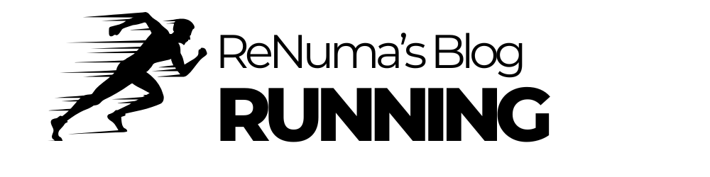

Correre: più di uno sport, un viaggio
La corsa è molto più di un semplice sport. Per molti è una sfida, un rituale quotidiano, un momento di libertà. Che tu sia un runner esperto o un principiante, ogni passo ha una storia da raccontare.
Perché corriamo?
Ognuno ha la sua motivazione: c'è chi corre per tenersi in forma, chi per scaricare lo stress, chi per migliorare le proprie prestazioni atletiche. Ma la corsa ha qualcosa di speciale: è essenziale, pura, ti mette in contatto con il tuo corpo e la tua mente in un modo unico.
I benefici della corsa
Correre regolarmente porta una serie di benefici, non solo fisici ma anche mentali:
- Migliora la salute cardiovascolare
- Aiuta a mantenere il peso forma
- Aumenta la resistenza e la forza muscolare
- Riduce lo stress e migliora l'umore grazie al rilascio di endorfine
- Migliora la qualità del sonno
- Favorisce la concentrazione e la disciplina
Corsa su strada vs. corsa su pista
Esistono diversi modi di approcciarsi alla corsa, ognuno con le sue caratteristiche:
- Corsa su strada: ideale per chi ama la libertà di esplorare nuovi percorsi, offre varietà di terreno e paesaggi.
- Corsa su pista: perfetta per chi vuole lavorare sulla velocità, misurare con precisione le proprie performance e migliorare la tecnica.
- Trail running: per chi ama l'avventura e la natura, una sfida tra salite, discese e percorsi sterrati.
Migliorare nella corsa: alcuni consigli
- Allenati con costanza: non serve strafare, l'importante è la regolarità.
- Lavora sulla tecnica: postura, falcata e cadenza fanno la differenza.
- Alterna velocità e resistenza: varia gli allenamenti tra corse lunghe e ripetute.
- Ascolta il tuo corpo: il recupero è parte dell'allenamento.
- Curare l'alimentazione: carboidrati, proteine e idratazione sono essenziali.
Il bello delle gare
Partecipare a una gara, che sia una 5K o una maratona, è un'esperienza unica. L'adrenalina della partenza, la spinta del pubblico, la soddisfazione di tagliare il traguardo: momenti che ogni runner porta nel cuore.
Condividere l'esperienza
La corsa non è solo una sfida personale, ma anche un modo per connettersi con altri. Condividere allenamenti, progressi e obiettivi con una community rende tutto ancora più stimolante.